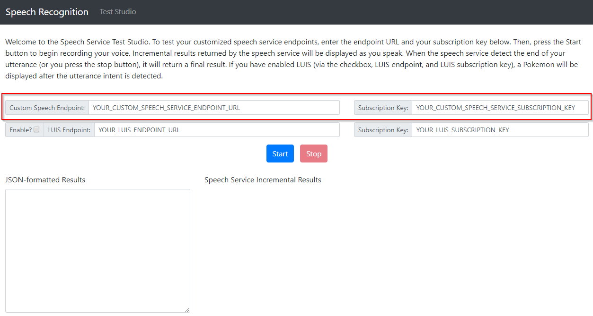

Introduction
Welcome to the Speech Workshop!
About the Speech Workshop
The Speech Workshop is a free one-day training event on Azure, from the community to the community.
The format for the workshop is a brief presentation, followed by hands-on and guided labs.
Your speakers include:
Getting Started
To get started you'll need the following pre-requisites. Please take a few moments to ensure everything is installed and configured.
- Microsoft Windows PC or Mac or Linux. Just have a laptop.
- Azure Subscription (Trial is ok, or an Azure account linked to a Visual Studio subscription or MSDN account. See later sections of this chapter to create a free trial account or activate your Visual Studio subscription)
What You're Building
Azure is big. Really big. Too big to talk about all things Azure in a single day.
We've assembled an exciting workshop to introduce you to several Azure services that cloud developers should know about:
- Web app
- Cognitive Services API for customized speech to text
- Cognitive Services API for Language Understanding (LUIS)
In this workshop, you’ll learn how to integrate Azure’s customizable speech recognition, text analytics, and intent analysis APIs into an Azure-hosted app. You’ll start by learning about the Speech to Text Service, a speech recognition API that can be trained to filter out background noise and recognize obscure words and phrases. After training the speech recognition model, you’ll integrate it into an Azure-hosted web app to recognize real-time speech. Finally, you’ll integrate and train the Language Understanding and Intelligence Service (LUIS) to analyze the intent of speech phrases you generate. With the intent identified, your app will be able to respond in real time.
Key concepts and takeaways
- Navigating the Azure portal
- Using Azure Resource Groups to manage multiple Azure services
- Deploying a web app to Azure web app service
- Developing language and acoustic models for the Speech to Text Service
- Deploying a customized speech recognition API
- Developing intent models for the Language Understanding (LUIS) service
- Deploying a customized LUIS endpoint
- Integrating speech recognition and intent analysis into an application
Agenda
- Chapter 0: Introduction
- Chapter 1: Getting Started in Azure
- Chapter 2: Introduction to the Speech to Text Service
- Chapter 3: Building Speech to Text Service data sets
- Chapter 4: Speech to Text Service Models
- Chapter 5: Deploying Speech to Text Service Endpoints
- Chapter 6: Introduction to Language Understanding (LUIS)
- Chapter 7: Building a LUIS App
- Chapter 8: Publishing and Testing LUIS Endpoints
- Chapter 9: Integrating LUIS into Your App
Materials
You can find additional lab materials and presentation content at the locations below:
- Presentation: https://github.com/mikebranstein/speech-workshop
- Source code for the code used in this guide: https://github.com/mikebranstein/speech-workshop
- This guide: https://github.com/mikebranstein/speech-workshop-instructions
Creating a Trial Azure Subscription
If you already have an Azure account
If you have an Azure account already, you can skip this section. If you have a Visual Studio subscription (formerly known as an MSDN account), you get free Azure dollars every month. Check out the next section for activating these benefits.
There are several ways to get an Azure subscription, such as the free trial subscription, the pay-as-you-go subscription, which has no minimums or commitments and you can cancel any time; Enterprise agreement subscriptions, or you can buy one from a Microsoft retailer. In exercise, you'll create a free trial subscription.
Exercise: Create a Free Trial Subscription
Browse to the following page http://azure.microsoft.com/en-us/pricing/free-trial/ to obtain a free trial account.
Click Start free.
Enter the credentials for the Microsoft account that you want to use. You will be redirected to the Sign up page.
Note
Some of the following sections could be omitted in the Sign up process, if you recently verified your Microsoft account.
Enter your personal information in the About you section. If you have previously loaded this info in your Microsoft Account, it will be automatically populated.

In the Verify by phone section, enter your mobile phone number, and click Send text message.

When you receive the verification code, enter it in the corresponding box, and click Verify code.

After a few seconds, the Verification by card section will refresh. Fill in the Payment information form.
A Note about your Credit Card
Your credit card will not be billed, unless you remove the spending limits. If you run out of credit, your services will be shut down unless you choose to be billed.

In the Agreement section, check the I agree to the subscription Agreement, offer details, and privacy statement option, and click Sign up.
Your free subscription will be set up, and after a while, you can start using it. Notice that you will be informed when the subscription expires.

Your free trial will expire in 29 days from it's creation.

Activating Visual Studio Subscription Benefits
If you happen to be a Visual Studio subscriber (formerly known as MSDN) you can activate your Azure Visual Studio subscription benefits. It is no charge, you can use your MSDN software in the cloud, and most importantly you get up to $150 in Azure credits every month. You can also get 33% discount in Virtual Machines and much more.
Exercise: Activate Visual Studio Subscription Benefits
To active the Visual Studio subscription benefits, browse to the following URL: http://azure.microsoft.com/en-us/pricing/member-offers/msdn-benefits-details/
Scroll down to see the full list of benefits you will get for being a MSDN member. There is even a FAQ section you can read.
Click Activate to activate the benefits.

You will need to enter your Microsoft account credentials to verify the subscription and complete the activation steps.
Preparing your Azure environment
You might be wondering how you can participate in a cloud development workshop and not need Visual Studio installed. Am I right?
Thanks to the Azure Resource Manager and some nifty templates I put together, we're going to provision a virtual machine (VM) with Visual Studio installed in your Azure subscription. From that point forward, you can work from the VM.
It takes about 10 minutes to get the VM deployed to your subscription, so let's get started!
Exercise: Provisioning a Visual Studio Community VM in your Azure Subscription
Start by clicking the Deploy to Azure button below.

This opens the Azure portal in a new tab of your browser. If you're prompted to sign in, do so.
When the page loads, you'll see this custom deployment page:

Under Basics, select/enter the following
- Subscription: your Azure subscription
- Resource group: Create new
- Resource group name: workshop-vm, or some other name that's easy to remember
- Location: East US
Resource Groups
Formally, resource groups provide a way to monitor, control access, provision and manage billing for collections of assets that are required to run an application, or used by a client or company department. Informally, think of resource groups like a file system folder, but instead of holding files and other folders, resource groups hold azure objects like storage accounts, web apps, functions, etc.
Under Settings, enter
- Virtual Machine Name: workshop-vm, or some other name that is less than 15 characters long, and no special characters
- Admin Username: your first name, or some other username without spaces
- Admin Password: P@ssW0rd1234, or another 12-character password with upper, lower, numbers, and a special character
WARNING
Do not forget your username and password. Write it down for today.
Approving the "Purchase"
Scroll down to the bottom of the page and click two boxes:
- I agree to the terms and conditions stated above
- Pin to dashboard
Press the Purchase button.
Deploying the VM
After a few moments, the deployment of your VM will begin, and you'll see a status notification in the upper right:

...and a deployment tile on your dashboard:

Now, wait for about 10 minutes and your virtual machine will be deployed and ready to use.
That's it for the pre-requisites for today's workshop. Wait until your VM is created, and we'll be getting started soon!
Getting started in Azure
Pre-requisites
Before we go any further, be sure you have all the pre-requisites downloaded and installed. You'll need the following:
- Microsoft Windows PC or Mac
- Evergreen web browser (Edge, Chrome, Firefox)
- Azure Subscription (trial is ok, and you should have already done this in the chapter 0)
- A Visual Studio Community edition VM running in Azure (see chapter 0 for setting this up)
NOTE
If you've been following along, you should have all of these above items.
Organizing your resources in the Azure portal
One of the most important aspects of your Azure subscription and using the Azure portal is organization. You can create a lot of Azure resources very quickly in the portal, and it can become cluttered quickly. So, it's important to start your Azure subscription off right.
Our first stop will be to create a new Dashboard to organize our Azure resources we're building today.
Exercise: Create a Dashboard and Resource Group
Creating a Dashboard
We'll start by creating a dashboard.
Login to the Azure portal, click + New Dashboard, give the dashboard name, and click Done customizing.

That was easy! Dashboards are a quick way of organizing your Azure services. We like to create one for the workshop because it helps keep everything organized. You'll have a single place to go to find everything you build today.
Pinning a Resource Group to the Dashboard
Now that you have a new dashboard, let's put something on it. We'll be searching for the resource group you created in chapter 0 (the one that is holding your VM), and pinning it to this dashboard.
Resource Groups
You'll recall from the last chapter that resource groups provide a way to monitor, control access, provision and manage billing for collections of assets that are required to run an application, or used by a client or company department. Informally, think of resource groups like a file system folder, but instead of holding files and other folders, resource groups hold azure objects like storage accounts, web apps, functions, etc.
Start by searching for the resource group you created in chapter 0. My resource group was called workshop-test7.

Click in the search bar at the top. If you're lucky your resource group will be at the very top (like mine was). If not, type it's name and click on it.
This opens the resource group. Next, click the pin icon at the upper-right to pin the resource group to your dashboard:

Finally, close the resource group, by clicking the X in the upper right corner (next to the pin icon). You should see the resource group pinned to your dashboard:

Now that you have the VM's resource group pinned to your dashboard, it will be easy to locate the VM in later exercises.
Creating a Resource Group
Our last step will be to create a new Resource Group to house the non-VM resources we'll create in this workshop.
Start by clicking the + Create a resource button on the left.

Search for resource group by using the search box, selecting Resource Group when it appears.

Select Resource Group from the search results window:

Click Create at the bottom:

Give the Resource group a name, select your Azure subscription, and a location. Press Create when you're finished.

After it's created, you'll see a message in the notification area:

Pin it to your dashboard by clicking the Pin to dashboard button. Note that the resource group has been added to your dashboard.

That wraps up the basics of creating dashboard, creating resource groups, and pinning resources to a dashboard. We're not going to take a deep dive into Azure Resource Group. If you're interested in learning more, check out this article.
Logging into your virtual machine
Next, let's get logged into the VM that we created in chapter 0.
Exercise: Logging into your VM
Start by navigating to your Azure portal dashboard.
Locate the VM resource group you pinned earlier in this chapter and click on your virtual machine:

Click the Connect button.

This downloads a file to your computer that will open in your Remote Desktop program.
RDP or SSH?
You may notice the Azure portal prompts you whether you should RDP or SSH into your VM. Choose RDP. RDP is a Remote desktop Protocol used by Windows to remotely control a virtual machine. SSH is a Secure Shell (text-based) mechanism for controlling Linux/Unix virtual machines.

Click the downloaded file to open a connection to your VM. Enter your username and password you created earlier.

Click OK to connect.
If you're prompted by a security message, respond Yes:

You're now connected to your VM.
Download additional software
If you're like me, you have a standard toolset you like to use. Please, download software for your VM and don't forget your browser of choice, Notepad++, Visual Studio Code, etc.
Get a real browser!
Download Chrome/Firefox/Edge
It's important that you download an evergreen browser on your virtual machine, because the version of Internet Explorer installed on the VM is not compatible with some of the JavaScript we have in this workshop.
Before you can download files through Internet Explorer, you need to enable downloads. Go to Tools -> Internet Options -> Security -> Internet -> Custom Level. Find Downloads -> File download, then select Enabled. Close Internet Explorer, then re-open.

Now, you can download your favorite browser. And don't forget to set it as your default. Don't use IE.
This concludes the exercise.
Now that you're connected to your VM, you can continue to workshop from inside the VM.
Running a VM in Azure
If you're worried about excessive charges to your Azure subscription because you're running a VM constantly, don't worry. This VM is programmed to shut itself down every morning at 1:00 AM.
Clone project from master branch
Let's get started by getting the master branch.
Exercise: Getting the workshop files
Clone or download the master branch from https://github.com/mikebranstein/speech-workshop.
Use this link to download a zip file of the master branch.

Unblock the .zip file!
Don't open the zip file yet. You may need to unblock it first!
If you're running Windows, right-click the zip file and go to the properties option. Check the Unblock option, press Apply, press Ok.

Now it's safe to unzip the file.
Verify the site works
Exercise: Compiling the solution
Open the solution in Visual Studio by double-clicking the Web.sln file in the web folder of the extracted files:

Logging into Visual Studio the first time
When you open Visual Studio the first time, it may take a few minutes. Be patient. You'll probably be prompted to sign in. Use your Microsoft account to sign in (the same one you used to sign up for the Azure trial).
The opened solution should look like this:

Right-click the solution (Solution 'Web'), and select Restore NuGet Packages, then Build the solution. You should not see errors.
This concludes the exercise.
That's it! You're up and running and ready to move on! In the next section, you'll learn how to deploy your website to Azure.
Understanding App Service and Web Apps
In the last part of this chapter, you'll learn how to create an Azure Web App and deploy the Speech Service website to the cloud. In short, I like to think of Azure Web Apps like IIS in the cloud, but without the pomp and circumstance of setting up and configuring IIS.
Web Apps are also part of a larger Azure service called the App Service, which is focused on helping you to build highly-scalable cloud apps focused on the web (via Web Apps), mobile (via Mobile Apps), APIs (via API Apps), and automated business processes (via Logic Apps).
We don't have time to fully explore all of the components of the Azure App Service, so if you're interested, you can read more online.
What is an Azure Web App?
As we've mentioned, Web Apps are like IIS in the cloud, but calling it that seems a bit unfair because there's quite a bit more to Web Apps:
Websites and Web Apps: Web Apps let developers rapidly build, deploy, and manage powerful websites and web apps. Build standards-based web apps and APIs using .NET, Node.js, PHP, Python, and Java. Deliver both web and mobile apps for employees or customers using a single back end. Securely deliver APIs that enable additional apps and devices.
Familiar and fast: Use your existing skills to code in your favorite language and IDE to build APIs and apps faster than ever. Access a rich gallery of pre-built APIs that make connecting to cloud services like Office 365 and Salesforce.com easy. Use templates to automate common workflows and accelerate your development. Experience unparalleled developer productivity with continuous integration using Visual Studio Team Services, GitHub, and live-site debugging.
Enterprise grade: App Service is designed for building and hosting secure mission-critical applications. Build Azure Active Directory-integrated business apps that connect securely to on-premises resources, and then host them on a secure cloud platform that's compliant with ISO information security standard, SOC2 accounting standards, and PCI security standards. Automatically back up and restore your apps, all while enjoying enterprise-level SLAs.
Build on Linux or bring your own Linux container image: Azure App Service provides default containers for versions of Node.js and PHP that make it easy to quickly get up and running on the service. With our new container support, developers can create a customized container based on the defaults. For example, developers could create a container with specific builds of Node.js and PHP that differ from the default versions provided by the service. This enables developers to use new or experimental framework versions that are not available in the default containers.
Global scale: App Service provides availability and automatic scale on a global datacenter infrastructure. Easily scale applications up or down on demand, and get high availability within and across different geographical regions. Replicating data and hosting services in multiple locations is quick and easy, making expansion into new regions and geographies as simple as a mouse click.
Optimized for DevOps: Focus on rapidly improving your apps without ever worrying about infrastructure. Deploy app updates with built-in staging, roll-back, testing-in-production, and performance testing capabilities. Achieve high availability with geo-distributed deployments. Monitor all aspects of your apps in real-time and historically with detailed operational logs. Never worry about maintaining or patching your infrastructure again.
Deploying to a Web App from Visual Studio
Now that you understand the basics of web apps, let's create one and deploy our app to the cloud!
Earlier in this chapter, you created a resource group to house resources for this workshop. You did this via the Azure Portal. You can also create Web Apps via the Azure portal in the same manner. But, I'm going to show you another way of creating a Web App: from Visual Studio.
Exercise: Deploying to a Web App from Visual Studio 2017
Visual Studio 2017 Warning
This exercise assumes you're running Visual Studio 2017. The UI and screens in Visual Studio 2015 aren't the same, but similar. We're not going to include screen shots for 2015, but we think you can figure it out.
From Visual Studio, right-click the Web project and select Publish. In the web publish window, select Microsoft Azure App Service, Create New, and press Publish. This short clip walks you through the process:

On the next page, give your Web App a name, select your Azure subscription, and select the Resource Group you created earlier (mine was named workshop).
Unique Web App Names
Because a web app's name is used as part of it's URL in Azure, you need to ensure it's name is unique. Luckily, Visual Studio will check to ensure your web app name is unique before it attempts to create it. In other words, don't try to use the web app name you see below, because I already used it.

Click New... to create a new Web App plan.
Web App Plans
Web App plans describe the performance needs of a web app. Plans range from free (where multiple web apps run on shared hardware) to not-so-free, where you have dedicated hardware, lots of processing power, RAM, and SSDs. To learn more about the various plans, check out this article.
Create a new free plan.

After the plan is created, click Create to create the Web App in Azure.
When the Azure Web App is created in Azure, Visual Studio will publish the app to the Web App. After the publish has finished, your browser window will launch, showing you your deployed website.
Web App URLs
The deployed web app has a URL of Web App Name.azurewebsites.net. Remember this URL, because you'll be using it in later chapters.
Check the Azure Portal to see the App Service plan and Web App deployed to your resource group:

Finally, open your web browser and navigate to the website you just deployed. Be sure to use HTTPS!
You should see a site like this:
This concludes the exercise.
Introduction to the Speech to Text Service
In this chapter you'll learn about the Speech to Text Service, how to provision one in the Azure Portal, and how to link your subscription to the Speech to Text Service portal.
Abbreviation
To save some time, you may see me refer to the Speech to Text Service as STT.
Overview
The Speech to Text Service enables you to create a customized speech-to-text platform that meets the needs of your business. With the service, you create customized language models and acoustic models tailored to your application and your users. By uploading your specific speech and/or text data to the Speech to Text Service, you can create custom models that can be used in conjunction with Microsoft’s existing state-of-the-art speech models. With these capabilities, you're able to filter out common background noise, adjust for localized dialects, and train the speech service to recognize non-standard/obscure words and phrases (like "Pokemon", scientific terms, and technical jargon).
For example, if you’re adding voice interaction to a mobile phone, tablet or PC app, you can create a custom language model that can be combined with Microsoft’s acoustic model to create a speech-to-text endpoint designed especially for your app. If your application is designed for use in a particular environment or by a particular user population, you can also create and deploy a custom acoustic model with this service.
How do speech recognition systems work?
Before you get started, it's important to understand how speech recognition systems work.
Speech recognition systems are composed of several components that work together. Two of the most important components are the acoustic model and the language model.
Acoustic Model
The acoustic model is a classifier that labels short fragments of audio into one of a number of phonemes, or sound units, in a given language. For example, the word “speech” is comprised of four phonemes “s p iy ch”. These classifications are made on the order of 100 times per second.
Phoneme
In short, a sound unit. Any of the perceptually distinct units of sound in a specified language that distinguish one word from another, for example p, b, d, and t in the English words pad, pat, bad, and bat.
Language Model
The language model is a probability distribution over sequences of words. The language model helps the system decide among sequences of words that sound similar, based on the likelihood of the word sequences themselves. For example, “recognize speech” and “wreck a nice beach” sound alike but the first hypothesis is far more likely to occur, and therefore will be assigned a higher score by the language model.
Both the acoustic and language models are statistical models learned from training data. As a result, they perform best when the speech they encounter when used in applications is similar to the data observed during training. The acoustic and language models in the Microsoft Speech-To-Text engine have been trained on an enormous collection of speech and text and provide state-of-the-art performance for the most common usage scenarios, such as interacting with Cortana on your smart phone, tablet or PC, searching the web by voice or dictating text messages to a friend.
Credits
This section was borrowed from Microsoft's official documentation. Thank you!
Using the Speech to Text Service, Acoustic Models, and Language Models
Throughout the next several chapters, you'll be building acoustic and language models. Don't worry if you don't understand everything right now, because you'll be learning as you go.
Bing Speech API and Custom Speech Service
Microsoft has various other speech-to-text services in Azure. The first is called the Bing Speech API, and the second Custom Speech Service. The Bing Speech API is like the Speech to Text Service, but it cannot be customized. I like to think of the Bing Speech API as a v1 product.
The Custom Speech Service was their first version of Microsoft's customized speech-to-text platform. As of the 2018 //BUILD conference, the Custom Speech Service was enhanced and renamed to the Speech to Text service. From time to time, you may see Custom Speech Service used interchangeably with Speech to Text service.
The Bing Speech API and Speech to Text Service are highly capable, but when I need to account for background noise, custom words, etc. I choose the Speech to Text Service.
Provisioning in Azure
Now that you know what the Speech to Text Service can do, let's start using it! You'll start by creating a Speech to Text Service instance in the Azure portal.
Exercise: Creating a Speech to Text Service Instance
Start by jumping back to the Azure portal, and create a new resource by clicking the Create a resource button.
Search for Custom Speech:

In the of search results, select Custom Speech (preview):

Fill out the required parameters as you create an instance:
- Name: workshop-css, or something similar
- Subscription
- Location: West US
- Pricing tier: F0
- Resource group: the resource group you created earlier

West US Location
Normally, I recommend you keep resources in the same region, but the Speech to Text Service is in preview right now, so it's only available in West US.
When the Speech to Text Service instance is provisioned, it will appear in your resource group:

The final step is to navigate to the Speech to Text Service instance by clicking on it.
Locate the Keys area and take note of KEY 1:

You'll need this key in the next step, so don't forget it.
This concludes the exercise.
Linking your Subscription on the Speech To Text Service Web Portal
There's not much you can do with the Speech to Text Service in the Azure portal because the service is still in preview. Instead, a separate portal exists to customize and work with the service. In the next section, you'll be introduced to the Speech to Text Service portal.
Exercise: Linking your STT subscription to the STT portal
Start by navigating to the STT web portal at https://cris.ai.
Click the Sign In link in the upper right and sign in with your Azure portal subscription login.
After logging in, click on your name the upper right, and select the Subscriptions option below it:

Subscriptions
The Subscriptions page shows all of your connected STT subscriptions.

Click the Connect existing subscription button. Add the STT subscription you just created in the Azure portal. Give it a name and enter KEY 1 from the Azure portal.

You should see the subscription appear on the subscriptions page.
This concludes the exercise.
That's it. In the next chapter, you'll start to use the STT by creating various data sets for training and testing.
Building Speech to Text Service data sets
In this chapter, you'll learn:
- The difference between training and testing data sets
- How acoustic data sets are built
- That language data sets help the Speech to Text Service (STT) understand the likelihood of certain words and phrases
- That pronunciation data sets can help with simple word and and syllable replacements
Understanding Machine Learning Data Sets
At the core of every artificial intelligence (or machine learning) problem is data. And that data is used in various capacities to train, build, and test the systems you develop. Because data is so critical to machine learning endeavors, you'll need to learn about the different ways data is used.
Thank you, StackExchange
This next section was adapted from a StackExchange post. Thank you to all that contributed, as you said it better than I could have.
Training and Test Data Sets
In many machine learning processes, you need two types of data sets:
In one data set (your gold standard) you have the input data together with correct/expected output, This data set is usually duly prepared either by humans or by collecting some data in semi-automated way. But it is important that you have the expected output for every data row here, because you need to feed the machine learning algorithms the expected, or correct results for it to learn. This data set is often referred to as the training data set.
In the other data set, you collect the data you are going to apply your model to. In many cases this is the data where you are interested for the output of your model and thus you don't have any "expected" output here yet. This is often real-world data.
With these two data sets, the machine learning process adheres to a standard 3-phase process:
Training phase: you present your data from your "gold standard" (or training data set) and train your model, by pairing the input with expected output. Often you split your entire training data set into two pieces. Approximately 70% of the training data is used for training, and 30% reserved for validation/testing. The 30% reserved data is often referred to as test data. The result of this phase is a trained model.
Validation/Test phase: to estimate how well your trained model has been trained, you pass in the reserved 30% of your testing data and evaluate it's accuracy.
Application phase: now you apply your trained model to the real-world data and get the results. Since you normally don't have any reference value in this type of data, you can only speculate about the quality of your model output using the results of your validation phase. You perform additional accuracy tests.
Separation of Training, Test, and Real-World Data Sets
An easy mistake to make with your training, test, and real-world data sets is overlapping data (or reusing data from one set in another). Imagine that you training a model to answer true/false questions using a series of 10 questions and answers. After the model is trained, you use the same 10 questions to evaluate how well the model performs. Ideally, it should perform 100%, but you don't know how well it really performs because you tested with the training data. The only true test is to use other real-world questions, then re-evaluate its performance.
Applying Machine Learning Data Set Concepts to the Speech to Text Service
Now that you know about the different types of data, you'll be creating training data sets for acoustic, language, and pronunciation data, then testing acoustic data.
Acoustic, Language, and Pronunciation
Don't worry if you don't know the difference between these 3 types of data the STT uses, you'll be learning about it next.
Acoustic Training data sets
In a previous chapter, you learned about acoustic models.
Acoustic Model
The acoustic model is a classifier that labels short fragments of audio into one of a number of phonemes, or sound units, in a given language. For example, the word “speech” is comprised of four phonemes “s p iy ch”.
To build acoustic models, you need acoustic data sets. An acoustic data set consists of two parts:
- a set of audio files containing the speech data
- a file containing the transcriptions of all audio files
Audio File Format and Recommendations
To build testing acoustic audio data for the Speech to Text Service, you should adhere to the following guidelines:
- All audio files in the data set should be stored in the WAV (RIFF) audio format.
- The audio must have a sampling rate of 8 kHz or 16 kHz and the sample values should be stored as uncompressed PCM 16-bit signed integers (shorts).
- Only single channel (mono) audio files are supported.
- The audio files must be between 100ms and 1 minute in length. Each audio file should ideally start and end with at least 100ms of silence, and somewhere between 500ms and 1 second is common.
- If you have background noise in your data, it is recommended to also have some examples with longer segments of silence, e.g. a few seconds, in your data, before and/or after the speech content.
- Each audio file should consist of a single utterance, e.g. a single sentence for dictation, a single query, or a single turn of a dialog system.
- Each audio file to in the data set should have a unique filename and the extension “wav”.
- The set of audio files should be placed in a single folder without subdirectories and the entire set of audio files should be packaged as a single ZIP file archive.
Holy Audio Requirements, Batman!
Yeah. This is a lot to take in. Don't worry. I've already built the audio files for you. We'll take a look in a bit.
Audio File Transcriptions
The second component of acoustic data is a text file containing transcripts of each audio file.
The transcriptions for all WAV files should be contained in a single plain-text file. Each line of the transcription file should have the name of one of the audio files, followed by the corresponding transcription. The file name and transcription should be separated by a tab (\t). Each line must end with a line feed and new line character (\r\n).
For example:
speech01.wav speech recognition is awesome
speech02.wav the quick brown fox jumped all over the place
speech03.wav the lazy dog was not amused
The transcriptions should be text-normalized so they can be processed by the system. However, there are some very important normalization rules that must be applied prior to uploading the data to the Speech to Text Service. The normalization rules are too lengthy to cover here, so you should check them out on your own. It may seem like a lot at first, but i've found it fairly straight-forward and I was quickly able to learn and apply them regularly.
Prepping your acoustic data for the STT portal
In the source code you downloaded from Github, you'll find the training audio files and an audio transcript of the files in the custom-speech-service-data/training folder:

Pokemon!
You may have noticed the file names of the acoustic data are Pokemon. My son and I have recently started to play Pokemon the Card Game together, so I thought this would be a fun way (and topic) to teach you about speech recognition. After all, Pokemon names are difficult to pronounce, and are a domain-specific language of their own. They're a perfect match for the capabilities of the Speech to Text Service.
Let's get started by uploading an acoustic data set to the STT portal.
Exercise: Uploading an acoustic data set to the STT portal
Start by locating the acoustic .wav audio files. Select the 17 audio files, zip them up, and name the zip file training-utterances.zip.

Next, navigate to the STT web portal at https://cris.ai.
Click the Sign In link in the upper right and sign in with your Azure portal subscription login.
After logging in, click on the Custom Speech navigation option and navigate to Adpatation Data:

At the top of the Adaptation Data page, will be an area for Acoustic Datasets.

Click the Import button and complete the following fields:
- Name: Pokemon - Acoustic Data - Training
- Description blank
- Locale: en-US
- Transcriptions file (.txt): upload the training-utterances.txt file
- Audio files (.zip): upload the training-utterances.zip file you created earlier

Click Import to upload the acoustic data and build the data set.
When the data is uploaded, you'll navigate back to the Acoustic Datasets page and your data set will be displayed in the grid:

Note the Status of the acoustic dataset is NotStarted. In a few moments, it will change to Running:

When you upload acoustic data, the STT will analyze the data, check it for errors, and ensure the transcription file matches the uploaded audio filenames. There are a variety of other checks that are performed that aren't important, but it's good to know that there is some post-processing that needs to occur before you can use the acoustic data set.
When the STT finishes analyzing and validating the acoustic data, the Status will change to Succeeded:

Congratulations! You've created your first acoustic data set. We'll be using it later in this chapter.
Curious? ...and Challenge #1
If you're wondering what the audio files sound like, don't hesitate to download them to your computer and play them. Just remember that playing the audio files on the VM we've created for the workshop probably won't work, so you'll have to download the files to your actual computer.
If you're in the mood for a challenge, augment the training data by adding your own audio files. I've found the open-source software Audacity to be a great tool for recording, editing, and exporting audio files in the right format. I suggest creating a few sample audio utterances relating to your favorite Pokemon (or try Charizard).
If you do add to the acoustic data set, don't forget to transcribe your audio and add the transcription to the training-utterances.txt file!

This concludes the exercise.
Language Training data sets
Now that you've created an acoustic data set, let's build a language data set. As you'll recall from a previous chapter, language models and language data sets teach the STT the likelihood of encountering certain words or phrases.
Language Model
The language model is a probability distribution over sequences of words. The language model helps the system decide among sequences of words that sound similar, based on the likelihood of the word sequences themselves. For example, “recognize speech” and “wreck a nice beach” sound alike but the first hypothesis is far more likely to occur, and therefore will be assigned a higher score by the language model.
Language Data Sets
To create a custom language data set for your application, you need to provide a list of example utterances to the system, for example:
- "pikachu please sit down"
- "don't sing jigglypuff you'll put me to sleep"
- "meowth put away those sharp claws"
The sentences do not need to be complete sentences or grammatically correct, and should accurately reflect the spoken input you expect the system to encounter in deployment. These examples should reflect both the style and content of the task the users will perform with your application.
The language model data should be written in plain-text file using either the US-ASCII or UTF-8, depending of the locale. For en-US, both encodings are supported. The text file should contain one example (sentence, utterance, or query) per line.
If you wish some sentences to have a higher weight (importance), you can add it several times to your data. A good number of repetitions is between 10 - 100. If you normalize it to 100 you can weight sentence relative to this easily.
More Rules!
Don't worry about these rules for now, because we've already assembled a collection of utterances appropriate for our needs today.
Before we get started, take a look at the utterances in the training-language-model-data.txt file. Here's a short excerpt:
ash's best friend should sit down
sit pikachu
sit on the floor pikachu
have a seat meowth
meowth please sit on the ground
i'd like to see ash's best friend act angry
get really mad pikachu
You'll notice that this is a collection of commands. This is of importance and significance. Later in the workshop, you'll be using the Language Understanding (LUIS) service to analyze the intent of spoken commands. So, it makes sense that the language model we'll be building contains commands.
Creating a Language Data Set
Now that you know what is in a language data set, let's head over to the STT portal and create one.
Exercise: Uploading a language data set to the STT portal
Start by navigating to the STT web portal at https://cris.ai, then navigate back to the Adaptation Data page.
Scroll down past the Acoustic Datasets area, and you'll find the Language Datasets area:

Click the Import button and complete the following fields:
- Name: Pokemon - Language Data - Training
- Description blank
- Locale: en-US
- Language data file (.txt): upload the training-language-model-data.txt file

Click Import to upload the language data and build the data set.
When the data is uploaded, you'll navigate back to the Language Datasets page and your data set will be displayed in the grid:

Note the Status of the language data set is NotStarted. In a few moments, it will change to Running, the Succeeded, just like the acoustic data set did.
Congratulations! You've created your first language data set. We'll be using it later in this chapter.
Challenge #2
Just like you did for the acoustic data set, feel free to augment the utterances I built. I suggest continuing to create utterances related to the Pokemon you added in the last challenge.
This concludes the exercise.
Pronunciation Training data sets
Now that you've created acoustic and language data sets, you could be ready to move on to designing the models for each. But, there's another customization you can provide that helps to train you model in a special way: pronunciation data.
Custom pronunciation enables users to define the phonetic form and display of a word or term. It is useful for handling customized terms, such as product names or acronyms. All you need is a pronunciation file (a simple .txt file).
Here's how it works. In a single .txt file, you can enter several custom pronunciation entries. The structure is as follows:
Display form <Tab>(\t) Spoken form <Newline>(\r\n)
Requirements for the spoken form
The spoken form must be lowercase, which can be forced during the import. No tab in either the spoken form or the display form is permitted. There might, however, be more forbidden characters in the display form (for example, ~ and ^).
Each .txt file can have several entries. For example, see the following screenshot:

The spoken form is the phonetic sequence of the display form. It is composed of letters, words, or syllables. Currently, there is no further guidance or set of standards to help you formulate the spoken form.
When to use Pronunciation data
I've found it useful to use pronunciation in a variety of circumstances. In the above example, pronunciation helps transform see three pee oh to C3PO. I've also used it in the past to transform a t and t to AT&T, and microsoft dot com to Microsoft.com.
Adding a Pronunciation Data Set
For your final data set, you'll create a pronunciation data set. Let's get to it!
Exercise: Uploading a pronunciation data set to the STT portal
Start by navigating to the STT web portal at https://cris.ai, then navigate back to the Adaptation Data page.
Scroll down past the Language Datasets area, and you'll find the Pronunciation Datasets area:

Click the Import button and complete the following fields:
- Name: Pokemon - Pronunciation Data - Training
- Description blank
- Locale: en-US
- Language data file (.txt): upload the training-pronunciation-data.txt file

Click Import to upload the pronunciation data and build the data set.
When the data is uploaded, you'll navigate back to the Pronunciation Datasets page and your data set will be displayed in the grid:

Note the Status of the language data set is NotStarted. In a few moments, it will change to Running, the Succeeded, just like the acoustic data set did.
Congratulations! You've created your first pronunciation data set. We'll be using it in the next chapter.
Challenge #3
I bet you can't guess what this challenge is about... This is a more difficult challenge, probably. That's because you don't really know about your problem domain yet. Typically, you add pronunciation data sets once you know more about your problem domain that you're trying to train for. But, if you think you can add something to what we already have, go for it!
This concludes the exercise.
Acoustic Testing data sets
You'll recall earlier in this chapter that there are multiple types of data sets we'll need: training, testing, and real-world.
So far, you've created 3 training data sets: acoustic, language, and pronunciation. Next, you'll need to create a testing data set.
Testing Data Sets are Acoustic Data Sets
Here's a secret - testing data sets for the STT are acoustic data sets. And here's why. Think about it - an acoustic data set provides audio files, with transcriptions of the audio file content. As a result, an acoustic data set is ideal for testing because it includes audio files, and their actual content.
Now, we have to be a bit careful, because it's easy to confuse your training and testing data sets because they are both acoustic data sets. So, as we create a second acoustic data set, we'll be sure to name it properly - with testing in it's name.
Exercise: Creating a testing acoustic data set
Start by locating the testing files we included in the workshop files. You'll find 6 .wav audio files in the custom-speech-service-data/testing folder:

Select the 6 audio files, zip them up, and name the zip file testing-utterances.zip.

Next, navigate to the STT web portal at https://cris.ai, and navigate to Adpatation Data.
Click the Import button by Acoustic Datasets and complete the following fields:
- Name: Pokemon - Acoustic Data - Testing
- Description blank
- Locale: en-US
- Transcriptions file (.txt): upload the testing-acoustic-model-data.txt file
- Audio files (.zip): upload the testing-utterances.zip file you created earlier

Click Import to upload the acoustic data and build the data set.
When the data is uploaded, you'll navigate back to the Acoustic Datasets page and your data set will be displayed in the grid:

Note the Status of the acoustic dataset is NotStarted. In a few moments, it will change to Running, then Succeeded.
Congratulations! You've created your testing acoustic data set.
Challenge #4
Yes. Again. Feel free to augment the testing data set you just created. Remember - don't overlap training/testing data, and make the data similar enough. For example, if you added Charizard to your training data sets, it would be a good idea to test for Charizard. Likewise, if you didn't add another pokemon, like Chespin, you shouldn't expect the STT to magically recognize it.

This concludes the exercise.
Phew! That was a long chapter! But, you learned quite a bit, like:
- the importance of separating training data from testing data
- that acoustic data is a combination of .wav files and normalized text transcripts
- pronunciation data sets can help your STT models interpret multi-word phrases into an abbreviation - like C3PO and AT&T
Speech to Text Service Models
In this chapter, you'll learn how to:
- perform testing on Microsoft's base models
- train acoustic and language models
- demonstrate that your hard work of creating custom models pays off by dramatically increasing the accuracy of Microsoft's base models
Overview
After creating Speech to Text Service (STT) data sets, you need to instruct STT to train models based on these data sets.
Training acoustic and language models is easy to do in the STT portal - point and click. But, before we do that, we'll take a pit stop and establish a baseline accuracy of the STT capabilities using Microsoft's base models.
Base Models - What Are They?
The STT comes with pre-trained acoustic and language models, known as the Universal models. With these base universal models, the STT service can convert audio to text. But, if you have specific business terms, language patterns, regional dialects, etc., you'll build upon the base universal model to get higher accuracy.
Microsoft updates the base universal model regularly, so your customized models can improve accuracy over time without adding to your training data.
Previous Base Models
In May 2018, Microsoft deprecated a variety of acoustic and language models. Previously the base models were customized for voice dictation and conversation, but now, there is a single base model capable of providing the same capabilities of the separate models, and with higher accuracy. You may see references to these models throughout the STT portal, but you can ignore them, as they are deprecated.
Testing the Accuracy of the Base Models
To understand the effect our STT customization will have, it's important to establish a baseline accuracy for the STT service against our testing data set.
Let's get started and see how the STT does against some of these Pokemon names ;-)
Exercise: Performing an accuracy test on the Microsoft base model
Start by navigating to the STT web portal at https://cris.ai, and navigate to Accuracy Tests.

This page shows the status of the past and ongoing accuracy tests performed by the STT.
Click the Create New button to begin a test against an acoustic and language model.
Complete the following fields:
- Locale: en-US
- Subscription: the one you created earlier
- Scenario: Universal, then select the Universal acoustic and Universal language models below
- Acoustic Data: Pokemon - Acoustic Data - Testing

Click Create to begin the test run.
When the test run is saved, you'll navigate back to the Accuracy Test Results page:

Note the Status of the test run is NotStarted. In a few moments, it will change to Running, then Succeeded.
The test run may take some time to execute (up to 10 minutes). So, it's a good time to take a short break. Check back in 5.
Hi, welcome back. I wish you had just won $1700. Will you settle for a lousy accuracy test?
So, let's check back in on the accuracy test.

Ugh! 45% word error rate - not good.
Word Error Rate (WER)
'WER' (Word Error Rate) and 'Word Accuracy' are the best measurements to take when comparing two utterances, these are typically values in % and are derived by comparing a reference transcript with the speech-to-text generated transcript (or hypothesis) for the audio. In our case, the reference transcript is the transcript file we supplied for the testing data set, and the speech-to-text generated transcript (or hypothesis) is what the STT generated when it processed the 6 audio files in the testing dataset.
The algorithm used is called the Levenshtein distance, it is calculated by aligning the reference with hypothesis and counting the words that are Insertions, Deletions, and Substitutions.
In general, WER is fairly complex to calculate. We won't dive much deeper, but if you're interested in learning more, check out this website.
Well, 45% error rate is still pretty high. Let's explore the results of the accuracy test.
Click the Details link to learn more. At the bottom of the page, you'll find the detailed transcription (we provided that) and the hypothesis (decoder output).

You should notice several mis-interpretations, as the STT had trouble with:
- Pikachu
- Meowth
- Jigglypuff
- Wink at me
What's interesting is that aside from the Pokemon names, the STT did a pretty good job. It got confused a bit about winking, but perhaps I didn't annunciate very well in the test files. We'll see later on.
Another thing to note is our testing data set is SMALL. Really small. In fact, there are only ~30 words in the entire data set. That's really too small, and for each word missed, we add ~3% word error rate. In a production system, we'd want hundreds of utterances, and thousands of words in a testing data set. So, keep that in mind for future endeavors.
This concludes the exercise.
I know we can do better then 45%, and we will as we build our own acoustic and language models.
Acoustic Models
Let's get started building an acoustic model based on our acoustic data set we uploaded earlier.
Exercise: Training an acoustic model
Start by navigating to the STT web portal at https://cris.ai, and navigate to Acoustic Models.

This page shows the various acoustic models you've trained for the STT.
Click the Create New button and complete the following fields:
- Locale: en-US
- Name: Pokemon - Acoustic Model
- Description: blank
- Scenario: Universal
- Acoustic Data: Pokemon - Acoustic Data - Training
- Subscription: your subscription
- Accuracy Testing: unchecked, b/c we've already run a test

Click Create to train the model.
When the model is saved, you'll navigate back to the Acoustic Models page:

Note the Status of the test run is NotStarted. In a few moments, it will change to Running, then Succeeded.
The test run may take some time to execute (up to 10 minutes). So, it's a good time to take a short break. Check back in another 10.
Hi, welcome back. My son loves these videos.
So, let's check back in on the model training:

Excellent, it's finished.
This concludes the exercise.
There's not much more to do with the acoustic model, so let's do the same with our language data set and train a language model
Language Models
Training language models is just like training acoustic models, so let's dive in.
Exercise: Training a language model
Start by navigating to the STT web portal at https://cris.ai, and navigate to Language Models.

This page shows the various language models you've trained for the STT.
Click the Create New button and complete the following fields:
- Locale: en-US
- Name: Pokemon - Language Model
- Description: blank
- Scenario: Universal
- Language Data: Pokemon - Language Data - Training
- Pronunciation Data: Pokemon - Pronunciation Data - Training
- Subscription: your subscription
- Accuracy Testing: unchecked, b/c we've already run a test

Click Create to train the model.
When the model is saved, you'll navigate back to the Language Models page:

Note the Status of the test run is NotStarted. In a few moments, it will change to Running, then Succeeded.
The training process may take some time to execute (up to 10 minutes). So, it's a good time to take yet another short break. Check back in another 5.
Welcome back, again. This video was for me. I love Tesla. Hopefully, I'll get one someday. Someday soon.
So, let's check back in on the model training:

Excellent, it's finished.
This concludes the exercise.
Testing the Trained Models
Now that you've built an acoustic model and language model that customizes the base models, let's test them! The original WER was 45%, so I think we can do better.
Exercise: Performing an accuracy test on your trained models
Start by navigating to the STT web portal at https://cris.ai, and navigate to Accuracy Tests.
Click the Create New button to begin a test against an acoustic and language model.
Complete the following fields:
- Locale: en-US
- Subscription: the one you created earlier
- Scenario: Universal, then select the Pokemon models below
- Acoustic Data: Pokemon - Acoustic Data - Testing

Click Create to begin the test run.
When the test run is saved, you'll navigate back to the Accuracy Test Results page:

Note the Status of the test run is NotStarted. In a few moments, it will change to Running, then Succeeded.
The test run may take some time to execute (up to 10 minutes). So, it's a good time to take a short break. Check back in 2.
This one was for everyone. And it's amazing.
So, let's check back in on the accuracy test.

Sweet! Look at that - 0% WER. I'm ok with that!. Feel free to explore the details of the accuracy test to learn more.
Challenge #5
Add several utterances to the testing data set that increase the word error rate (WER), then train the acoustic and language models to reduce it.
This concludes the exercise.
In this chapter, you learned:
- why it's important to test Microsoft's base model to establish a baseline accuracy
- how to create acoustic and language models
- how to improve STT accuracy by building customized models
Deploying Speech to Text Service Endpoints
In this chapter, you'll learn how to:
- deploy your customized acoustic and language models and create a secured endpoint
- test the customized STT endpoint using the web app you deployed earlier
Overview
Previously, you learned about the various data sets you need to train, test, and operationalize machine learning systems. Over the past 2 chapters, you created training and testing data sets, built customized acoustic and language models, then tested the customization accuracy.
The next step is to deploy your customization and test them with real-world data.
Let's get started!
Deploying Custom Models
You've already done the hard work of building the customized models, so let's use them to create a deployment.
PREREQUISITES
Before you proceed, you'll need a customized acoustic and language model that have a Succeeded status. If your models are still training, wait a few more minutes, then check back when the models are ready.
Exercise: Deploying customized acoustic and language models
Start by navigating to the STT web portal at https://cris.ai, and navigate to Endpoints.
Click the Create New button to create a new endpoint.
Complete the following fields:
- Locale: en-US
- Description: blank
- Name: Pokemon
- Subscription: the one you created earlier
- Scenario: Universal, then select the Pokemon models below

Click Create to deploy the models to production.
When the endpoint is saved, you'll navigate back to the Endpoints page:

Note the Status of the test run is NotStarted. In a few moments, it will change to Running, then Succeeded.
The deployment will not take long (up to 1 minute). That's it! You've deployed your models.
This concludes the exercise.
Exploring the Speech to Text Service Endpoint
Now that you've deployed a customized STT endpoint, you can consume it in an application. But how?
Let's take a closer look at your endpoint.
Exercise: Exploring a STT endpoint
Start by navigating to the STT web portal at https://cris.ai, and navigate to Endpoints.
Click the Details link next to your Pokemon endpoint:

The deployment details page shows you a variety of details about your endpoint. Scroll down to the Endpoints area:

The endpoints area shows a variety of URIs that you can use to access your customized deployment. You can interact with the STT via a:
- HTTP REST API
- WebSockets with support for the Speech Protocol/JavaScript WebSocket API
You'll notice that for each option, you have endpoints for short and long-form audio. In some cases, endpoints support punctuation detection.
Depending on the needs of your application, you may choose a different endpoint. I've used each of these previously and think it's good to walk through each at a high-level.
HTTP REST API
Use this option when you have a .wav file that you want to upload and get a single response back. You won't get real-time speech results back, but it works well when you want to do quick, bulk processing of a large collection of audio files.
WebSockets with support for the Speech Protocol/JavaScript WebSocket API
The last option is to interact with the STT using a specific protocol called the Speech Protocol. This also has it's own SDK and API you need to adhere to when using these endpoints. There is a JavaScript and C# version of the SDK.
The Speech Protocol
The Speech Protocol is the recommended way of interfacing with the STT.
Support for the Speech Protocol is limited to a JavaScript and C# SDK. To learn more about the protocol, check out the official protocol documentation. If you need an alternate implementation, the documentation for the Speech Protocol explains how it works, so you can roll your own.
Rolling your Own Speech Protocol Client
Don't do this, and I speak from experience. I've done it. It's not easy, the documentation isn't great, and unless you have a lot of experience writing asynchronous web socket protocol code in C#, this can be really time consuming and difficult. I lost a month of my life to this. The end result was pretty cool. I did it because the C# SDK wasn't available yet, and I didn't have an option of waiting for Microsoft's team to implement it.
Subscription Key and Endpoint URL
Ok, sorry for the tangent. Let's get back to the deployment. You'll need to keep track of a few pieces of data:
First, take note of the Subscription Key at the top. Second, you'll need the web socket protocol URL from the WebSocket with the Speech Protocol/JavaScript WebSocket API (wss://westus.stt.speech.microsoft.com/speech/recognition/dictation/cognitiveservices/v1?cid=fd366d47-aac1-4972-ad7a-2fce21cb5fc1) for my deployment.
Don't Use MY Endpoint URL
Please don't copy my endpoint base URL. If you do, you'll get errors later on. Please copy your own.
With these two values copied/saved, you're ready to move on to testing the endpoint.
This concludes the exercise.
Testing the STT Endpoint
Now, let's return to the web app you deployed to Azure earlier and test your Speech to Text Service deployment.
Exercise: Testing a STT endpoint deployment
Don't use your VM for this exercise
It's important that you don't use your VM for this exercise, because you'll be using your computer's microphone. This just doesn't work well through a remote desktop connection.
Start by navigating to your deployed Azure web site. My URL was http://workshopwebapp.azurewebsites.net/.
After the page loads, paste your deployed STT endpoint base URL into the Endpoint text box, and the subscription key into the Subscription Key text box:

Press the Start button and start speaking. The page may ask to access your microphone, and as you speak, the site will submit your speech to the STT endpoint you created and return incremental speech results in real-time.
Try speaking the phrase, "Pikachu is a cool pokemon." Remember, use HTTPS when accessing your deployed site.
Now, that's cool! As you speak, you'll see incremental results returned to you browser and displayed in the Current hypothesis area. Then, when the STT recognizes the end of your utterance, it returns JSON-formatted result:
{
"RecognitionStatus": "Success",
"DisplayText": "Pikachu is a cool Pokémon.",
"Offset": 4700000,
"Duration": 23100000
}
{
"RecognitionStatus": "EndOfDictation",
"Offset": 43540000,
"Duration": 0
}
The way this STT endpoint works is that each time an utterance is detected, a JSON object is returned with "RecognitionStatus": "Success". Inside, it tracks the audio millisecond count that was sent, based on the Offset and Duration, meaning that at audio millisecond 0, the system detected an utterance beginning, and an utterance ending after 26300000 milliseconds.
The STT also returns the speech hypothesis in a variety of formats. The most meaningful is the "Display": "Pikachu is a cool Pokémon." result, which is the official transcription with a confidence % of 92.3154%.
Pretty cool.
Go ahead an try a few more phrases.
Diving into the web page code
We're not going to dive into the JavaScript code that manages interacting with the Speech Protocol WebSocket endpoint. It's really complicated. You're welcome to dive into the details on your own, but it's out of scope for us today.
Challenge #6
Now that you have a full training to testing to real-world testing methodology for the STT, try to stump your trained model. Then, return back to your data sets, models, and deployments. Update all of them and attempt to retrain the system to address the shortcomings you identified.
This concludes the exercise.
In this chapter, you learned:
- how to test your trained models with real-world data
- that a STT deployment deploy various endpoints that are used in different scenarios
Introduction to Language Understanding (LUIS)
In this chapter, you'll learn:
- how Azure's Language Understanding (LUIS) service can identify the intent of text
- how to provision a LUIS subscription and it to the LUIS web portal
Overview
In the past chapters, you've been focused on building a customized speech recognition engine with the STT. Now that you are equipped with the knowledge to build these on your own, we'll turn our attention to analyzing the results your STT generates.
In most machine learning and speech-to-text projects, using a single product (like STT) isn't common. Instead, you'll often chain the results of one service to the input of another. This process is referred to as building a machine learning pipeline.
In the final chapters of this workshop, you'll be expanding your speech-to-text pipeline by adding intent analysis with Language Understanding (LUIS).
About Language Understanding (LUIS)
Language Understanding (LUIS) allows your application to understand what a person wants in their own words. LUIS uses machine learning to allow developers to build applications that can receive user input in natural language and extract meaning from it. A client application that converses with the user can pass user input to a LUIS app and receive relevant, detailed information back.
What is a LUIS app?
A LUIS app is a domain-specific language model designed by you and tailored to your needs. You can start with a prebuilt domain model, build your own, or blend pieces of a prebuilt domain with your own custom information.
A model starts with a list of general user intentions such as "Book Flight" or "Contact Help Desk." Once the intentions are identified, you supply example phrases called utterances for the intents. Then you label the utterances with any specific details you want LUIS to pull out of the utterance.
Prebuilt domain models include all these pieces for you and are a great way to start using LUIS quickly.
After the model is designed, trained, and published, it is ready to receive and process utterances. The LUIS app receives the utterance as an HTTP request and responds with extracted user intentions. Your client application sends the utterance and receives LUIS's evaluation as a JSON object. Your client app can then take appropriate action.

Key LUIS Concepts
Intents
An intent represents actions the user wants to perform. The intent is a purpose or goal expressed in a user's input, such as booking a flight, paying a bill, or finding a news article. You define and name intents that correspond to these actions. A travel app may define an intent named "BookFlight."
Utterances
An utterance is text input from the user that your app needs to understand. It may be a sentence, like "Book a ticket to Paris", or a fragment of a sentence, like "Booking" or "Paris flight." Utterances aren't always well-formed, and there can be many utterance variations for a particular intent.
Entities
An entity represents detailed information that is relevant in the utterance. For example, in the utterance "Book a ticket to Paris", "Paris" is a location. By recognizing and labeling the entities that are mentioned in the user’s utterance, LUIS helps you choose the specific action to take to answer a user's request.
| Intent | Sample User Utterance | Entities | ||
|---|---|---|---|---|
| BookFlight | "Book a flight to Seattle?" | Seattle | ||
| StoreHoursAndLocation | "When does your store open?" | open | ||
| ScheduleMeeting | "Schedule a meeting at 1pm with Bob in Distribution" | 1pm, Bob |
How you'll use LUIS
Now that you know a little bit about LUIS, let's see how it'll be used in conjunction with STT.
When you're finished integrating LUIS into your solution, you'll be able to speak commands into the web site you published, and ask a variety of Pokemon (Pikachu, Jigglypuff, Meowth, etc.) to perform a variety of actions (sit, jump, scratch, sing, etc.).
LUIS will be used to take the output of the STT endpoint you created and identify the intent (the action) and entity (the Pokemon). Then, the web site will parse the LUIS response and act accordingly by displaying the appropriate image at the bottom of the page.
Provisioning in Azure
Before we can use LUIS, we'll need to provision a LUIS subscription in the Azure portal. Let's get started!
Exercise: Creating a LUIS Subscription
Start by jumping back to the Azure portal, and create a new resource by clicking the Create a resource button.
Search for Language Understanding:

Fill out the required parameters as you create an instance:
- Name: workshop-luis, or something similar
- Subscription: your Azure subscription
- Location: East US
- Pricing tier: F0
- Resource group: the resource group you created earlier

When the LUIS subscription is provisioned, it will appear in your resource group:

The final step is to navigate to the LUIS subscription by clicking on it.
Locate the Keys area and take note of KEY 1:

You'll need this key in the next chapter, so don't forget it.
This concludes the exercise.
Linking your Subscription on the LUIS Web Portal
There's not much you can do with LUIS in the Azure portal because it has a separate portal (like the Speech to Text Service).
The process for linking your LUIS subscription in the LUIS portal is a bit different than linking your STT subscription. As a result, we'll revisit this in a later chapter.
For now, hold on to your subscription key.
Building a LUIS App
In this chapter, you'll learn:
- how to build intents
- how to create entities and map them to intent phrases
- how phrase lists can help increase accuracy
Overview
In the last chapter you learned about the basics of LUIS: intents, utterances, entities. You also learned how we'll be using LUIS and how it will integrate into our speech-to-text pipeline.
I don't want to delay us too much, so let's dive right in by creating your first LUIS app.
Creating a LUIS app
Exercise: Creating a LUIS App
Log in to the LUIS portal at https://www.luis.ai, and navigate to the My Apps area:

This page lists the various LUIS apps you have created.
Click the Create new app button. Name it Pokemon:

After creating the app, you'll be redirected to the Intent page automatically:

There's not much more to creating the initial LUIS app, so let's continue on with defining your app intents.
This concludes the exercise.
Creating Intents
You'll recall that LUIS intents are represent actions the user wants to perform. The intent is a purpose or goal expressed in a user's input, such as booking a flight, paying a bill, or finding a news article. In our case, we'll be creating intents like sitting down, scratching, jumping, etc.
Exercise: Creating LUIS intents
Log in to the LUIS portal at https://www.luis.ai, and navigate to the Intents area by first navigating to the My Apps areas, drilling down into the Pokemon app:
This page lists the various intents you have created. You'll notice that a None intent was automatically created for you. All LUIS apps start with this intent - you should not delete it. The None intent is used as a default fall-back intent for your LUIS apps.
Finding the intents
You'll be creating a variety of intents in the Pokemon app. To help you, we've already defined the intents for you. In the code you downloaded from Github, locate the language-understanding-data folder. It contains a file named luis-utterances.md:

Inside the markdown file, you'll find an intent followed by a series of utterances. For example:
# Sit
- ash's best friend should sit down
- sit pikachu
- sit on the floor pikachu
- have a seat meowth
- meowth please sit on the ground
In the snippet above, the heading Sit is the name of an intent you'll create, followed by utterances that align to the intent.
LUIS is like the Speech to Text Service, as it needs to learn the types of phrases (or utterances) that map to an intent.
Referencing the luis-utterances.md file, create intents for each intent listed in the document.
Follow along below to create the first intent, then rinse and repeat for the remaining intents.
Adding an intent
To add an intent, click the Create new intent button:

Name the intent Sit, as referenced in the luis-utterances.md file:

On the next screen, the Sit intent will be listed at the top. In the text box below the intent, enter in the related utterances from the luis-utterances.md file. After each utterance, press Enter to save the utterance.

You'll notice that the LUIS portal associated the utterance with the intent each time you press Enter.
When you've finished entering the associated utterances, you can scroll down to review and modify them:

You'll also notice each utterance has a drop down next to it allow you to re-associate it with a different intent, if you made a mistake.
When you're finished entering the utterances for this intent, navigate back to the list of intents by clicking the Intents link on the left:

Do I have to type in all the intents?
No. You do niot need ot type in all the intents. LUIS has a comprehensive REST API for interacting with your LUIS apps. Through the API, you can upload intents, entities, training, and deploy your model. For more information check out this page.
Finish adding the remaining intents
Proceed to add the remaining intents listed in the luis-utterances.md file. When you're finished, your list of intents should look like these:

This concludes the exercise.
Adding Entities
After adding intents to your LUIS app, it's time to add entities. As you'll recall, an entity represents detailed information that is relevant in an utterance. For example, in the utterance "Jigglypuff, stop singing", "Jigglypuff" is a Pokemon. By recognizing and labeling the entities that are mentioned in the user’s utterance, LUIS helps you choose the specific action to take to answer a user's request.
Additional entity information
There are a few important things about entities that are relevant, but we hadn't covered them yet.
First, entities are optional but highly recommended.
While intents are required, entities are optional. You do not need to create entities for every concept in your app, but only for those required for the app to take action.
For example, as you begin to develop a machine learning pipeline that integrates LUIS, you may not have a need to identify details/entities to act upon. So, when starting off, don't add them. Then, as your app matures, you can slowly add entities.
Second, entities are shared across intents. They don't belong to any single intent. Intents and entities can be semantically associated but it is not an exclusive relationship. This allows you to have a detail/entity be applicable across various intents.
In the LUIS app you're building today, we'll be defining a Pokemon entity that can identify a Pokemon by name. Because each of our intents typically involves a particular Pokemon, the Pokemon entity will be shared across intents. This means that an intent/entity combination gives us a unique action to perform.
For example, the "Jigglypuff, sing." utterance yields the intent of Sing with an identified Pokemon entity of type Jigglypuff.
Types of entities
LUIS has a variety of entity types, and each has a specific use. There are too many to dive into here, but I encourage you to learn more by reading the LUIS documentationhttps://docs.microsoft.com/en-us/azure/cognitive-services/luis/luis-concept-entity-types#types-of-entities.
Now that you know about entities, let's add the Pokemon entity.
Exercise: Creating LUIS intents
Log in to the LUIS portal at https://www.luis.ai, and navigate to the Entities area by first navigating to the My Apps areas, drilling down into the Pokemon app:

This page lists the entities you have defined.
Click the Create new entity button to create the Pokemon entity. Select List as the entity type:

List Entities
A list entity is a fixed list of values. Each value is itself a list of synonyms or other forms the value may take. For example, a list entity named PacificStates include the values Washington, Oregon, California. The Washington value then includes both "Washington" and the abbreviation "WA".
After clicking the Done button, you're redirected to the Pokemon entity detail page. Add the following values:
- Pikachu
- Jigglypuff
- Meowth
After adding these Pokemon, add synonyms for each, as shown below.

By adding these synonyms, you train LUIS to recognize the synonyms as the entity list value. For example, bubble pokemon will be recognized as a Pokemon entity, with Jigglypuff as the specific type.
Validating entity mapping
When you've finished adding the entities and synonyms, refresh your browser.
To validate that the entities are being properly recognized, navigate back to the Intents page, then open the detail page for an intent.
You'll notice that text in each utterance is now replaced with a generic intent Pokemon block. You can use the Entities view toggle switch to see how utterance text maps to an entity:

This concludes the exercise.
Increasing Accuracy with Phrase Lists
Now that you've added intents and entities, let's explore a quick way to improve the accuracy of your LUIS app with phrase lists.
What is a phrase list?
A phrase list includes a group of values (words or phrases) that belong to the same class and must be treated similarly (for example, names of cities or products). What LUIS learns about one of them is automatically applied to the others as well. This is not a white list of matched words.
In other words, a phrase list can help you better identify an intent or entity in a more dynamic manner.
How to use phrase lists
For example, in a travel agent app, you can create a phrase list named "Cities" that contains the values London, Paris, and Cairo. If you label one of these values as an entity, LUIS learns to recognize the others.
A phrase list may be interchangeable or non-interchangeable. An interchangeable phrase list is for values that are synonyms, and a non-interchangeable phrase list is intended for values that aren't synonyms but are similar in another way.
There are two rules of thumb to keep in mind when using phrase lists:
Use phrase lists for terms that LUIS has difficulty recognizing. Phrase lists are a good way to tune the performance of your LUIS app. If your app has trouble classifying some utterances as the correct intent, or recognizing some entities, think about whether the utterances contain unusual words, or words that might be ambiguous in meaning. These words are good candidates to include in a phrase list feature.
Use phrase lists for rare, proprietary, and foreign words. LUIS may be unable to recognize rare and proprietary words, as well as foreign words (outside of the culture of the app), and therefore they should be added to a phrase list feature. This phrase list should be marked non-interchangeable, to indicate that the set of rare words form a class that LUIS should learn to recognize, but they are not synonyms or interchangeable with each other.
A note on using phrase lists
A phrase list feature is not an instruction to LUIS to perform strict matching or always label all terms in the phrase list exactly the same. It is simply a hint. For example, you could have a phrase list that indicates that "Patti" and "Selma" are names, but LUIS can still use contextual information to recognize that they mean something different in "make a reservation for 2 at patti's diner for dinner" and "give me driving directions to selma, georgia".
When to use phrase lists instead of list entities
After learning about phrase lists, you may be confused on whether to use these, or to use a list entity.
With a phrase list, LUIS can still take context into account and generalize to identify items that are similar to, but not an exact match, as items in a list. If you need your LUIS app to be able to generalize and identify new items in a category, it's better to use a phrase list. When you want to be able to recognize new instances of an entity, like a meeting scheduler that should recognize the names of new contacts, or an inventory app that should recognize new products, use another type of machine learned entity such as a simple or hierarchical entity. Then create a phrase list of words and phrases. This list guides LUIS to recognize examples of the entity by adding additional significance to the value of those words.
A list entity explicitly defines every value an entity can take, and only identifies values that match exactly. A list entity may be appropriate for an app in which all instances of an entity are known and don't change often, like the food items on a restaurant menu that changes infrequently.
LUIS Best practice
After the model's first iteration, add a phrase list feature that has domain-specific words and phrases. This feature helps LUIS adapt to the domain-specific vocabulary, and learn it fast.
Exercise: Creating phrase lists to increase accuracy
Log in to the LUIS portal at https://www.luis.ai, and navigate to the My Apps areas, drilling down into the Pokemon app.
Click on the Phrase lists navigation option:

Click the Create new phrase list button to create a phrase list.
You'll be using the phrase list feature to create a phrase list for each of our intents. This is a good idea because our intents like Sit and Jump are fairly generic, and you can describe each of these intents in a variety of ways. For example, "sit down" and "grab a chair" are different utterances that have the same intent: Sit.
Add a phrase list named Sit, and either type in a variety of synonyms for sit, or use the Recommend option to help identify a list of words that are related to sitting:

I added the following options to my phrase lists, feel free to create your own, add more, subtract some, but be sure to create a phrase list for each intent:
- Sit: sit, lie, rest, be seated, sits, sitting, stay, relax, take a seat, to stay
- Wave: wave, signal, waves, sign, gesticulate
- Sing: sing, singing, sings, chant, sang
- Jump: jump, skip, hop, jumping, jumps, bounce, leap, jumped
- Wink: wink, smile, grin, twinkle, winks
- Scratch: scratch, scrape, rub, scratching, graze, scratches, scratched
- ActAngry: angry, annoyed, enraged, frustrated, angered, irate, angers, sad, irritated, fuming
When you're finished, your phrase lists should look like this:

This concludes the exercise.
That's it - you've created intents and entities to help train your LUIS app to recognize Pokemon and an action you want the Pokemon to perform. You've also added phrase lists to help train your app to respond and identify intents more efficiently.
In the next chapter, you'll train, test, and publish your LUIS app.
Publishing and Testing LUIS Apps
In this chapter, you'll learn how to:
- train your LUIS app
- test a trained app
- publish a trained LUIS app
Overview
The concept of training a LUIS app is like training Speech to Text Service apps. So far, you've created a training data set including intents and entities, so the next step is to train your app. Then you'll test the trained app, and publish for consumption.
In a real-world scenario, you'll incrementally advance the functionality of a LUIS app. For example, you'll start with a few intents and entities, then as your app matures (or when you identify a deficiency), you'll add new intents and entities, re-train, and publish a new version of the LUIS app.
Let's jump into the training process.
Training LUIS
Training a LUIS app is easy. Seriously. I don't like to refer to machine learning concepts as easy, but all you do is click a button.
Exercise: Training your LUIS app
Log in to the LUIS portal at https://www.luis.ai, and navigate to the My Apps areas, drilling down into the Pokemon app.
In the upper-right corner, you'll see a Train button. Visually, the button will appear with a red dot when there are changes in the LUIS app that can be trained. Hovering over the button also indicates that it can untrained changes.
Click the Train button to train your LUIS app, integrating intents and entities into the trained app model:

When training is finished, the Train button has a green dot:

That's it. It was easy.
This concludes the exercise.
Testing LUIS
Now that your LUIS app is trained, you can test it. The LUIS portal offers a cool testing utility embedded, so it makes testing your app quick.
Let's test a few phrases that we may expect our app should handle.
Exercise: Testing your LUIS app
Log in to the LUIS portal at https://www.luis.ai, and navigate to the My Apps areas, drilling down into the Pokemon app.
In the upper-right corner, you'll see a Test button.

Click the Test button and a sidebar will pop out. In the textbox, enter in several utterances and see how your trained LUIS app performs.
Try these utterances:
- Pikachu sit down.
- Jigglypuff jump.
- Stop being so loud Jigglypuff.

That's it for testing in the LUIS portal.
This concludes the exercise.
With a tested LUIS app that you're satisfied with, let's move on to publishing your LUIS app.
Publishing a LUIS App
Let's jump right into publishing.
Exercise: Publishing a LUIS app
Log in to the LUIS portal at https://www.luis.ai, and navigate to the My Apps areas, drilling down into the Pokemon app.
In the upper-right corner, you'll see a PUBLISH link. Click it:

On the publishing page, there are a few things you can do:
- select whether you publish your trained LUIS app to a staging slot (for testing) or a production slot
- choose the timezone of the published app
- have LUIS return the all intent analysis results or only the highest ranking value
- incorporate Bing spell checker to auto-correct words submitted
- add resource / subscription keys
Intent Analysis Results
As you're getting started with LUIS, I recommend you have your LUIS apps return all of the identified intents, because it can aid in your debugging of complex intents and models. When you become more comfortable with LUIS and have a greater confidence in it's results, you'll want to disable returning ALL results. This is also especially important on lower-bandwidth apps (like mobile).
Bing spell checking
In many cases, I like to enable Bing spell checker, because I cannot guarantee that text coming into LUIS is valid. But, in your Pokemon app, you should not enable Bing spell checker because you're not guaranteed the STT speech-to-text pipeline will return valid words, plus you don't know if Pikachu will be replaced by something else by Bing spell checker.
A good rule of thumb: if you're using a speech-domain that could have strange words present, don't use Bing spell checker.
We'll be publishing directly to production, so select Production and Eastern time zones.
Before you click the Publish to Production button, scroll down a bit further and click the Add Key button.

Select your Azure tenant, subscription, and the LUIS subscription you created in an earlier chapter and add the key.
This adds your LUIS subscription to the LUIS app you just created and allows you to deploy your app to that subscription.
After add the LUIS subscription, you can click the Publish to Production button:

It will take a few minutes for LUIS to publish your app to the LUIS subscriptions you entered.
When it's finished, take note of two values below: the LUIS endpoint base URL and the Key String. For my LUIS app deployment, mine are:
- LUIS endpoint base URL: https://eastus.api.cognitive.microsoft.com/luis/v2.0/apps/6f0e678b-212c-4d4e-b0cc-967cb57f0a3a Key String: 4a580409############ad344e6f25 (some obscured)
You'll need these values in the final chapter to test it all out!
This concludes the exercise.
Integrating LUIS into Your Apps
In the final chapter of the workshop, you'll learn:
- how to integrate LUIS into an app
Overview
With a published app, you're ready to get LUIS into the Speech Recognition website you deployed to Azure earlier in the workshop.
Before you jump into testing, let's learn how to access LUIS endpoints.
LUIS REST API
LUIS is exposed as a REST API endpoint and can be accessed right from your web browser, or through your favorite REST API testing software. I like to use Postman.
Let's test out your LUIS endpoint.
Exercise: Testing out your LUIS endpoint with Postman
Start by downloading and installing Postman on the Azure VM you've been using today.
After Postman is installed, close out of all the windows/popups it shows on startup, and you should see a screen like this:

Navigate back to the LUIS portal and copy the URL next to your LUIS subscription on the Publish page of your Pokemon app:

Paste the link into the HTTP GET textbox in Postman, then click the Params button. Next to the q query string parameter, type in pikachu sit down on the ground, then click the Send button:

The HTTP response will be displayed in the Body area below. My response is included below. I'll let you examine the HTTP response from LUIS on your own.
{
"query": "pikachu sit down on the ground",
"topScoringIntent": {
"intent": "Sit",
"score": 0.956479847
},
"intents": [
{
"intent": "Sit",
"score": 0.956479847
},
{
"intent": "ActAngry",
"score": 0.0324947946
},
{
"intent": "Sing",
"score": 0.00468421541
},
{
"intent": "Wave",
"score": 0.00439580763
},
{
"intent": "None",
"score": 0.00238293572
},
{
"intent": "Scratch",
"score": 0.00228275615
},
{
"intent": "Jump",
"score": 0.00204163464
},
{
"intent": "Wink",
"score": 0.00131020416
}
],
"entities": [
{
"entity": "pikachu",
"type": "Pokemon",
"startIndex": 0,
"endIndex": 6,
"resolution": {
"values": [
"Pikachu"
]
}
}
]
}
As you can see, LUIS returns the query we passed pikachu sit down on the ground, and all of the intents it believes are applicable, with associated confidence percentages. It also selects the top-ranking intent and displays it separately. Finally, LUIS returns any entities it identifies, and indicates where in the query the entity occurred.
Pretty cool, and easy to use.
This concludes the exercise.
Now that you understand how to send data to LUIS via an HTTP GET and what the output of a LUIS request looks like, let's jump into the web site you published to Azure.
Testing LUIS through the Speech Recognition web app
Exercise: Testing LUIS in your web app
Return to your laptop, not the VM you've bee using. Navigate to the Speech recognition web app you published to Azure earlier. My URL was https://workshopwebapp.azurewebsites.net/.
This time, enter your STT endpoint URL, STT Subscription key, check the LUIS checkbox, and add your LUIS endpoint base URL, and LUIS subscription key.
LUIS Endpoint base URL
The LUIS endpoint URL should be everything before the query string in the LUIS endpoint URL. For example, mine is https://eastus.api.cognitive.microsoft.com/luis/v2.0/apps/6f0e678b-212c-4d4e-b0cc-967cb57f0a3a. Do not include the query string.
With LUIS enabled on the web site, test it out. Using the Start and Stop buttons, speak a few phrases:
- pikachu sit down
- jigglypuff don't sing that loud, i'm trying to sleep
Check out the results!
Sweet!
Now, how does it all work? Well, I'll let you check out the JavaScript code on your own in the MVC app. Here's a hint: check out the UpdateRecognizedPhrase JavaScript function in the Index.cshtml view.
This concludes the exercise.
Wow. So, we have a full end-to-end solution for performing speech-to-text analysis, identifying the intent of the text, and reacting to the identified intent. Congratulations on sticking it out.
I have a few more things to share, so you're not finished yet.
Final Challenge
Starting from the beginning with the Speech to Text Service (acoustic & language data sets, models, and deployments), add some more Pokemon to the mix. Then update the LUIS intents, entities, and phrase lists. Finally, add more images to the web site and deploy it all to Azure.
Super Double Secret Probation Challenge
As you can see, I desperately need help styling the web site that's part of this workshop. Submit a PR to my Github repo! Please. Someone.
Increasing LUIS Accuracy
Earlier in the workshop, you learned how to use phrase lists to increase the accuracy of your LUIS app. But that's not the only way. LUIS has adaptive learning capabilities and the ability to update the trained LUIS model by validating the generated intent and entity hypothesis of queries it has processed.
We're not going to cover this in the workshop, but you should check out the Review endpoint utterances area of your Pokemon app.

That's officially the end of the workshop. Thank you for your time! I hope you enjoyed learning some of the advanced artificial intelligence offerings on Azure!
Go forth and build some modern apps!